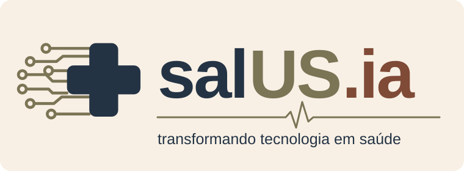

Pitch Deck 2026
Quem somos
Um copiloto para a triagem segura, com o humano no centro.
Somos uma startup de Ciência de Dados e IA da UFV que ajuda a enfermagem de urgência a não errar na classificação de risco, sem tirar dela a decisão.
LPLarissa PrevideCiência de Dados e IA
ABAnna Cassia Alves BuenoCiência de Dados e IA
JLJosé Lucas Silva de OliveiraCiência de Dados e IA

Eu ajudo a lembrar. Quem cuida é você.
AKCIT Camp 2026Universidade Federal de Viçosa · Campus Rio Paranaíba